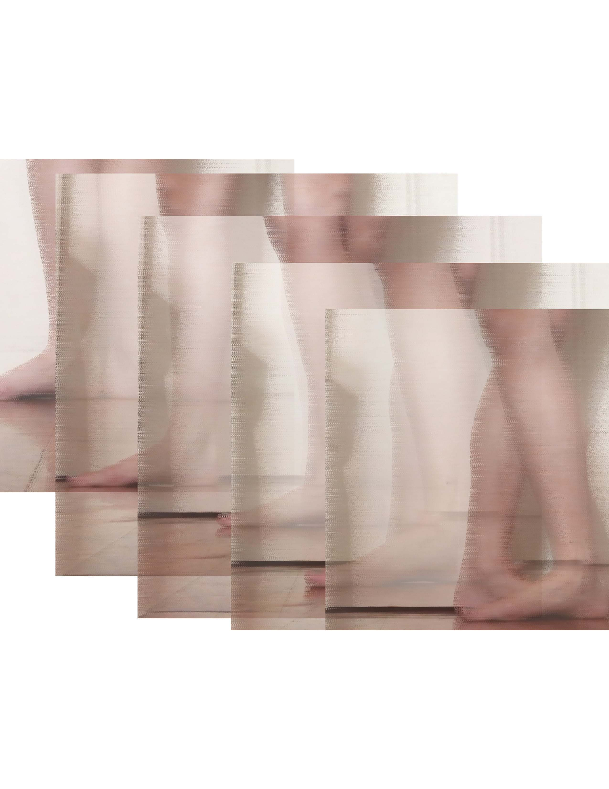
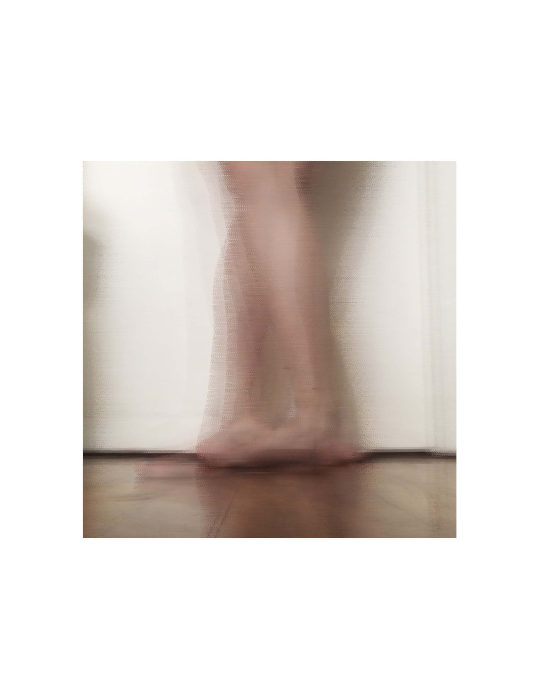
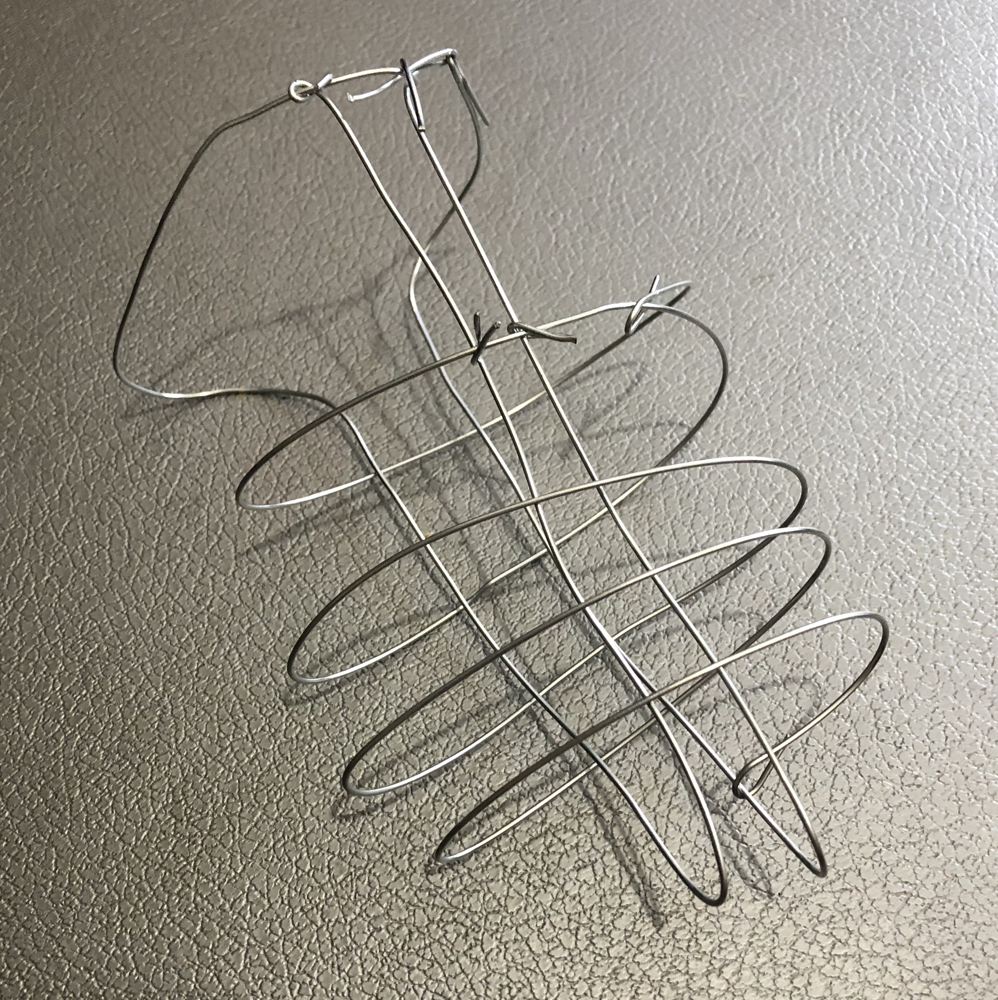
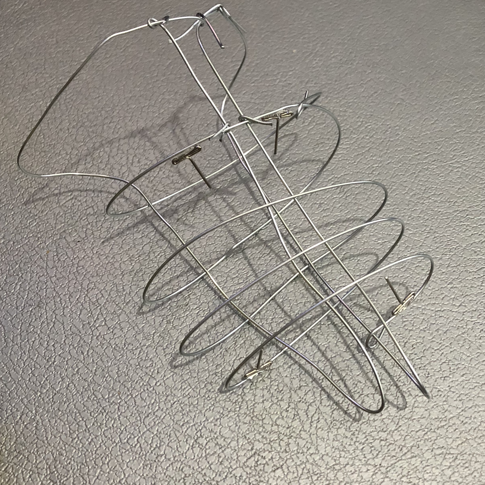
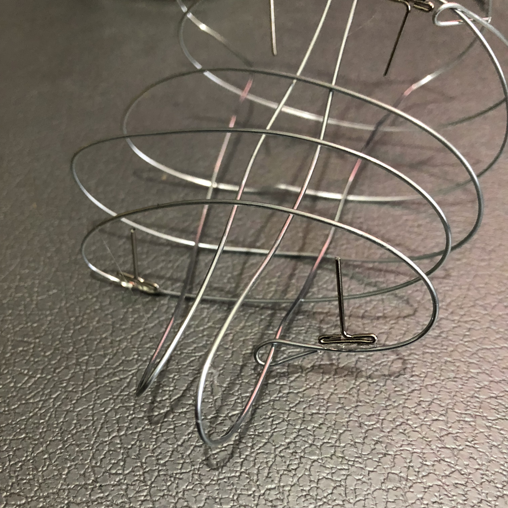

Ideas in Form: Ballet
In this study I've explored the ways in which ballet positions contort the human body. These unnatural movements leave the dancers with a variety of injuries. It's not a matter of if but when and what.
For the 2D study below, I decided to focus my research on the classical ballet foot positions. I chose this because when doing research about common injuries it seemed that most of the damage was centralized in the feet and knees. These parts of the body are particularly stressed while holding the classic foot positions. To explore this topic I stood in these positions myself and photographed them. I then processed them using javascript's p5.js library with which I pixel smudged each photo to give the effect of movement. I realized that the roughness this created was also representative of the discomfort I felt in these positions. To help further develop the sense of movement I then layered the photos in various ways.
Study 1: 1st through 5th position layered diagonaly in order to show the progression of the positions.
Study 2: Each position photo layered on top in order from 1st to 5th.
 For the 3D study below, I decided to explore the idea that ballet shoes, specifically in pointe work, cause large amounts of pain and discomfort while restricting the foot. This is related to the original topic of ballet injuries as there are countless accounts of how messed up your feet can become after performing ballet. To explore this topic I decided to create a "torture device" that resembles the shape of a foot or a shoe. To do this I chose the material of wire. I went through various iterations of ways of caging the foot with this wire. After settling on a sufficiently cage-like structure, I then added a few spikes sticking into the foot area to express the pain that happens in the foot. The final foot cage is still a relatively rough model of this idea, but I have been able to explore my concept successfully through this. I managed to learn more about the shape of the foot and the challenges of making something that covers the foot which either deliberately constricts or supports via these studies.
  